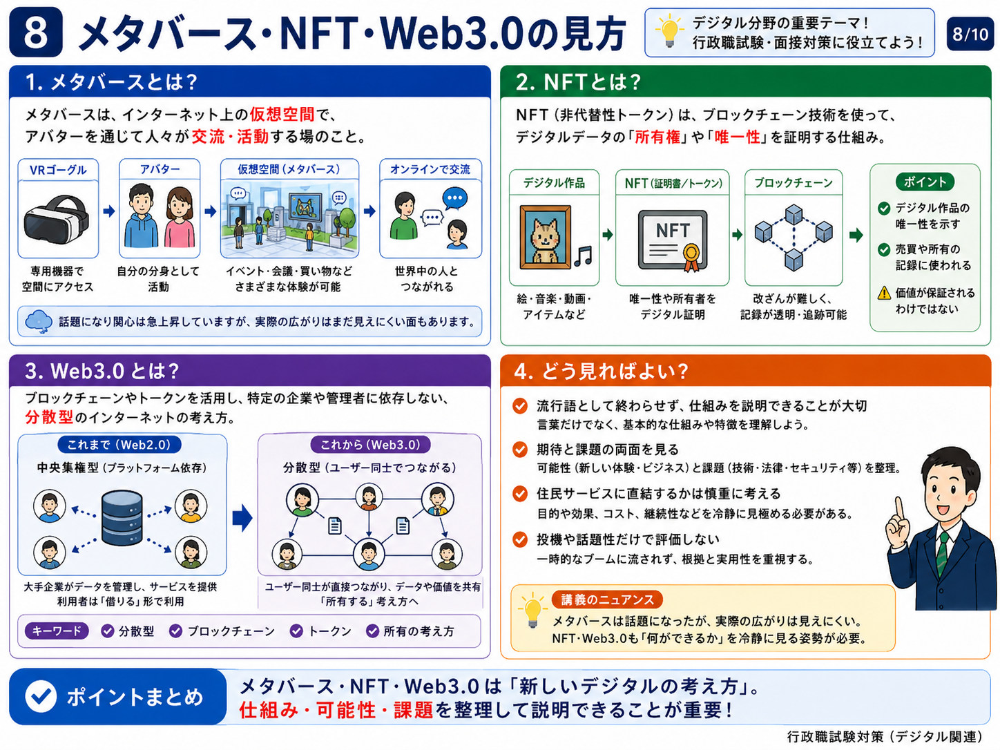
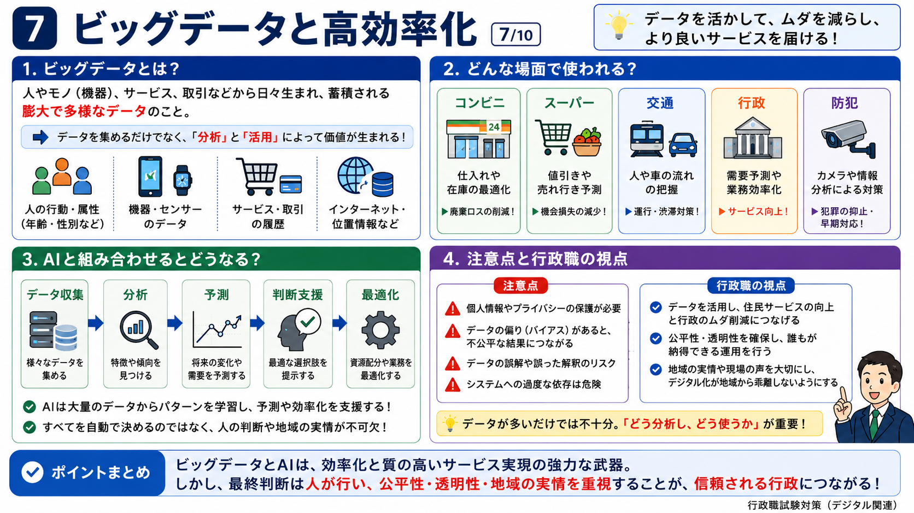
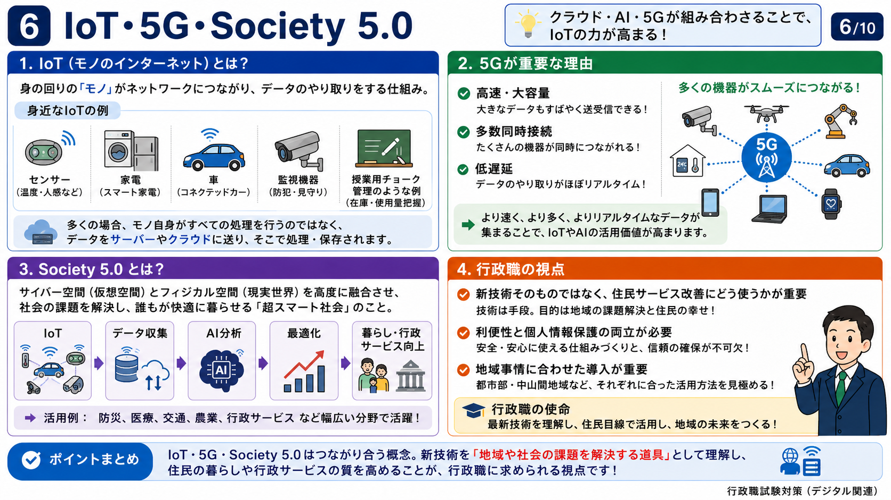
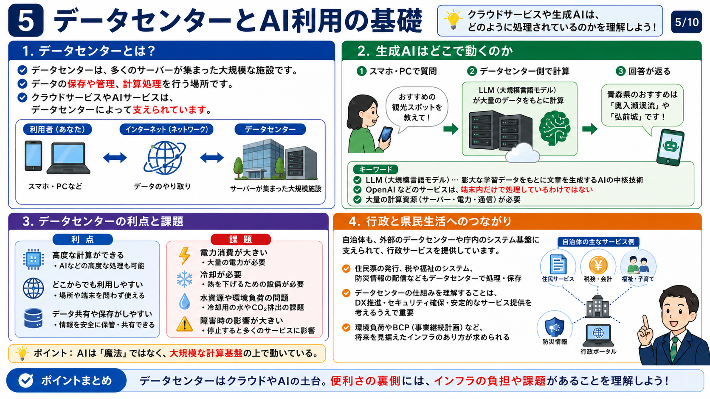
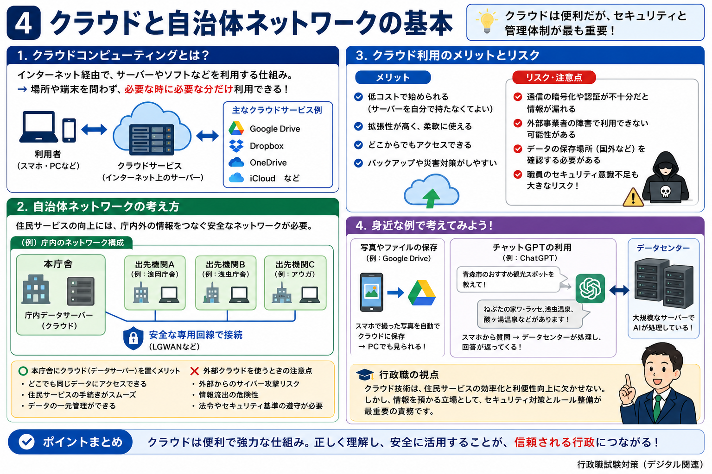
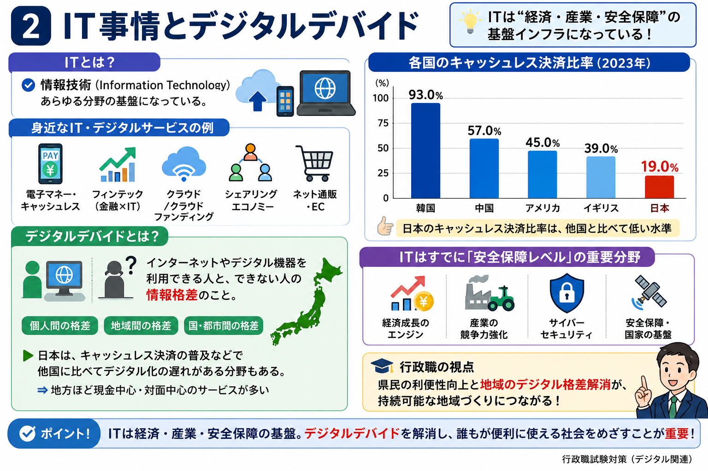
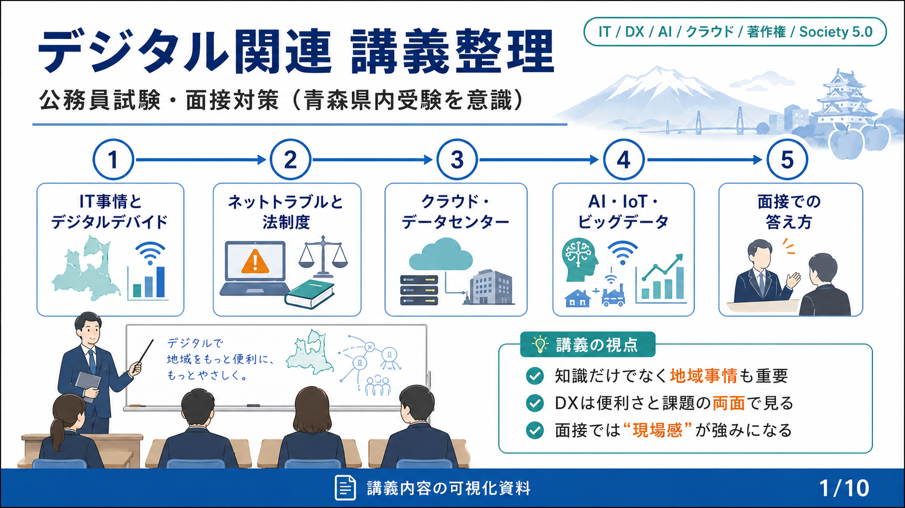

album
行政・デジタル社会の答え方
デジタル技術、行政の役割、住民サービスと課題を面接で説明するための整理素材。
要確認: フォルダ分類は社会科学だが、画像内に面接対策の表現があるため表示説明のみ要確認。








album
デジタル技術、行政の役割、住民サービスと課題を面接で説明するための整理素材。
要確認: フォルダ分類は社会科学だが、画像内に面接対策の表現があるため表示説明のみ要確認。






